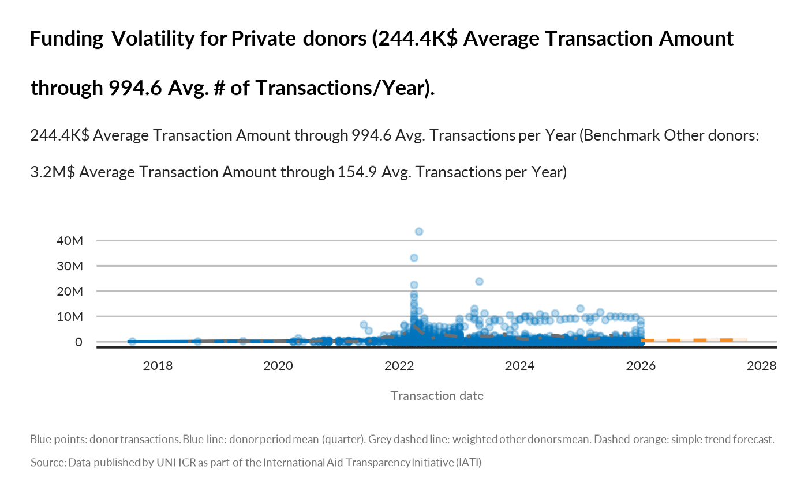
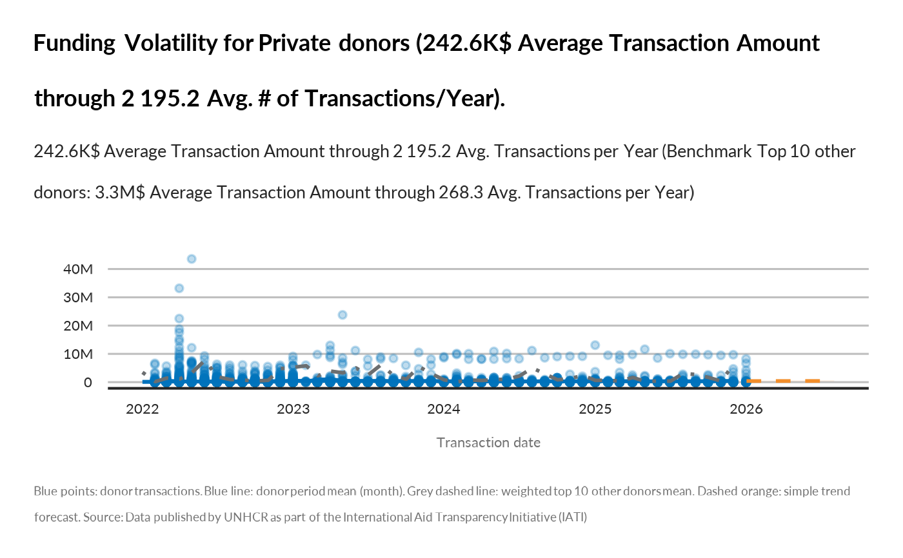
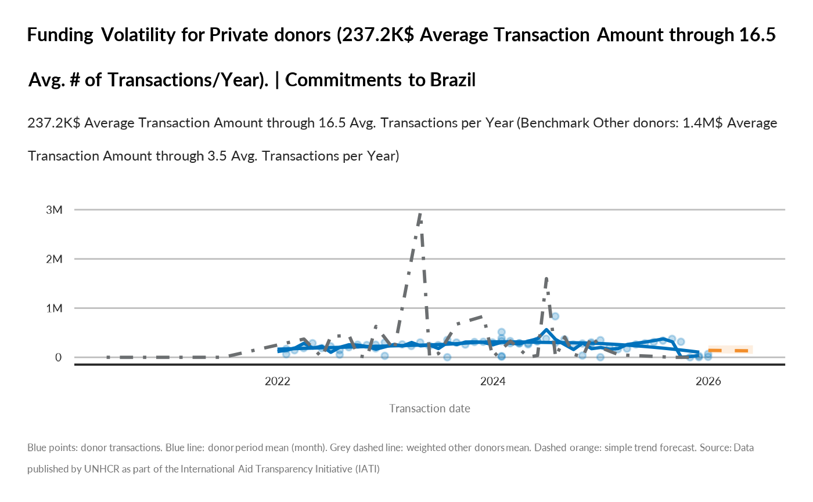

Plot donor funding volatility
Source:R/show_donor_funding_volatility.R
show_donor_funding_volatility.RdCreates a volatility view of a donor's incoming commitments: - Points: transaction-level USD amounts for the selected donor - Smoothed line: monthly/quarterly mean transaction value (donor) - Comparator: weighted mean transaction value for other donors, weighted by each donor's total received amount (under the same filters) - Forecast: simple trend model (lm on log1p period mean) extended forward
Title/subtitle highlight average amount per transaction and average number of transactions per year for the donor vs weighted averages for other donors combined.
Arguments
- donor_name
Character. The donor to plot.
- year
Optional integer/numeric vector. Filter years (e.g., 2023 or c(2022,2023)).
- programme_lab
Optional character vector. Filter on programme label.
- iati_identifier_ops
Optional character vector. Filter on operation identifier.
- ctr_name
Optional character vector. Filter on recipient country name (ctr_name).
- top_n_donors
Optional integer. If provided, restricts comparator to the top N donors by total funding amount (USD) across the filtered period. NULL (default) includes all other donors in the comparator.
- time_unit
Aggregation unit for trend line: "month" (default) or "quarter".
- smooth_method
Smoother for trend line: "loess" (default) or "gam".
- forecast_horizon
Integer. Number of periods (months/quarters) to forecast.
- show_forecast_ci
Logical. If TRUE, show a confidence ribbon for the forecast.
- verbose
Logical. Print small diagnostics.
Examples
# Donor Funding Volatility
show_donor_funding_volatility(
donor_name = "Private donors",
time_unit = "quarter",
forecast_horizon = 8
)
#> Volatility plot prepared for donor: Private donors | periods: 27 | comparator: Other donors | forecast: 8 periods

show_donor_funding_volatility(
donor_name = "Private donors",
year = 2022:2026,
top_n_donors = 10,,
forecast_horizon = 8,
time_unit = "month"
)
#> Restricting comparator to top 10 other donors by total funding. Comparator donors: United States of America (Government of), United States, Germany - Federal Foreign Office, European Commission - Humanitarian Aid & Civil Protection, Norad - Norwegian Agency for Development Cooperation, France - Ministry for Europe and Foreign Affairs, Ministry of Foreign Affairs of Japan, UK - Foreign, Commonwealth and Development Office, Netherlands - Ministry of Foreign Affairs, España con ACNUR
#> Volatility plot prepared for donor: Private donors | periods: 48 | comparator: Top 10 other donors | forecast: 8 periods

show_donor_funding_volatility(donor_name = "Private donors",
ctr_name = "Brazil")
#> Volatility plot prepared for donor: Private donors | periods: 47 | comparator: Other donors | forecast: 6 periods
